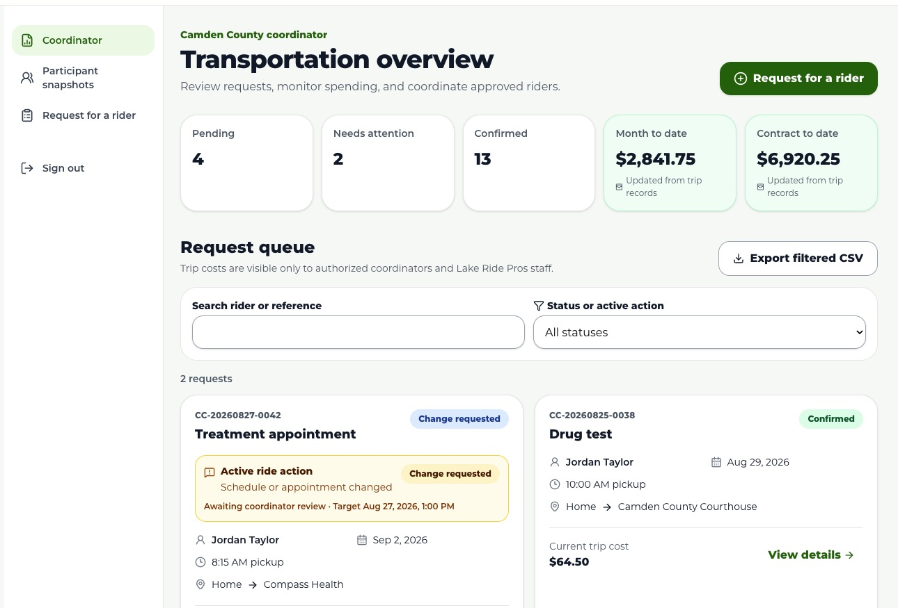

Start with the overview
Review Pending, Needs attention, Confirmed, month-to-date, and contract-to-date totals.

Review · Coordinate · Report
Use the coordinator portal to review the participant request queue, respond to ride actions, submit on behalf of an approved participant, and monitor program activity.

1 2 3Example screen uses sample participant, request, and cost information.
Review Pending, Needs attention, Confirmed, month-to-date, and contract-to-date totals.
Search by participant or reference, filter by status/action, then select View details.
Acknowledge a new request, ask for information, or decline with a participant-visible explanation. Acknowledge/complete or decline change and cancellation actions.
Choose the approved participant first, then complete the same ride details and approved-location fields used in participant requests.
Use period filters to review participant profile, phase, ride metrics, approved locations, costs, and accountability details.
Export the filtered request queue to CSV. Review invoice records when issued; payments are not processed in the portal.
Acknowledged does not mean confirmed. A ride becomes Confirmed only after Lake Ride Pros schedules and links the actual trip. A change/cancellation request also does not alter the confirmed trip until processed.
Coordinator views contain confidential participant and cost information. Use only for authorized program work, do not share screenshots/exports, sign out on shared devices, and use the minimum necessary information.